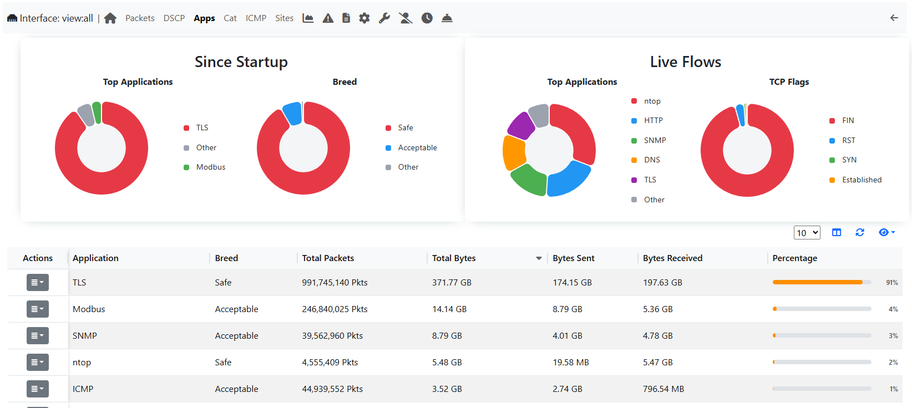
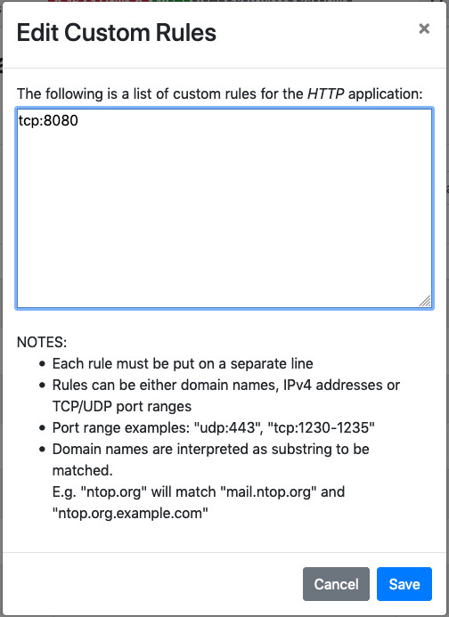
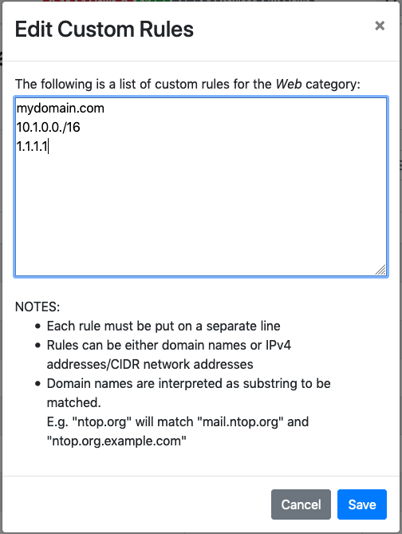

Applications and Categories
Category
Traditionally nDPI was used by ntopng to detect flows L7 protocol. With the advent of more and more protocols, speaking about single protocols is often too difficult. Users usually are not interested in the specific protocol but rather on a whole group of protocols. For example, it’s easier to reason about VPN traffic as a whole rather than a particular VPN implementation.
For these reasons, nDPI (and ntopng) has been extended to provide a logical grouping of protocols, called Categories. With Categories it’s possible, for example, to get an idea of the network traffic of a host:

Host Category Overview
Some use cases solved by the Categories include:
Block all advertisement sites (nEdge)
Trigger an alert whenever my employees access a malware site (ntopng, whereas in nEdge there is the ability to block this traffic)
Prevent clients from accessing the WiFi sites of competitors as they are using them for comparing prices (nEdge)
Custom Applications
In the Applications tab it’s possible to configure the category associated associated with a particular application.

Applications Configuration Page
ntopng determines the application of a flow via some rules into nDPI. However, some additional rules can be specified by the user via the –ndpi-protocols|-p <file> option. The file has the following format:
# host:"<value>",host:"<value>",.....@<subproto>
host:"googlesyndacation.com"@Google
host:"venere.com"@Venere
An example for this configuration file is available here.
Ntopng also supports editing such file from the GUI. In order to do so, it’s still necessary to use the above option to point to a protos file located into a directory where ntopng has the permission to read and write. In practice, in order to enable this feature, ntopng should be started with the –ndpi-protocols=/var/lib/ntopng/protos.txt option. If you already have a protos file, move it to /var/lib/ntopng/protos.txt and run
sudo chown ntopng:ntopng /var/lib/ntopng/protos.txt
to prepare it to be used by ntopng.
After this feature is enabled, by clicking on the “Edit Rules” button it will be possible edit an application rules directly from the GUI and add new protocols. It’s important to note that rules and new protocols will only be created and applied after a restart of ntopng.


Editing Application Rules
For example, the tcp:8080 rule in the example above tells ntopng to treat all the TCP traffic on port 8080 as HTTP. In order to delete a user defined protocol it’s necessary to clear all of its rules and save the changes. The protocol will be deleted after a restart of ntopng.
Custom Categories
As shown above, ntopng already assigns a default category to the known L7 protocols. Nevertheless, it’s also possible for the user to specify a list of additional hosts to be included into a particular category. ntopng provides 5 empty “custom categories” dedicated to this task, but users are also free to modify the other categories.
The custom category hosts can be specified via some host-based rules. The host-based rules will be used to perform substring matching on some of the flow information:
Client/Server IP
DNS query
Host SNI
HTTP Host
If a match is found, the flow category will be set to the corresponding matching category. These rules can be configured from the Categories tab.

By clicking “Edit Rules” it’s possible to define some rules to match hosts and associate them to the category.


Edit Category Hosts
The picture above shows some custom hosts defined for the Web category.
Note
host matching based on IP addresses is currently limited to IPv4 flows.
ntopng also supports external lists to define custom categories, loaded from text file (local) or online services (e.g. emergingthreats for the Malware category). Since lists are also used to raise alerts (e.g. for hosts in the Malware or Mining category), you may need to add exceptions to those lists, whitelisting selected hosts. This is possible adding an host to the list, prepending “!” to the IP/hostname (e.g. !1.2.3.4).
Adding a Rule from a Flow
From the flow details page, it’s possible to click on the plus sign beside the flow SNI, DNS or HTTP host to easily create a rule to associate such host to a particular application or category.


Add Host Rule